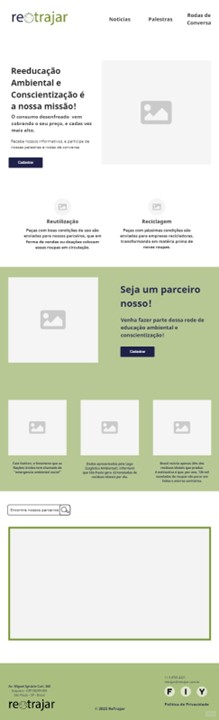

Retrajar - Ecossistema & Tecnologia.
Iniciativa tecnológica para combater o descarte têxtil irregular e promover o consumo consciente.
Descrição do Projeto
Desenvolvido durante o 1º semestre da FATEC Itaquera, o Retrajar é uma plataforma (protótipo) que utiliza a tecnologia para conscientizar e combater o descarte têxtil irregular. O objetivo é transformar a relação do usuário com o consumo de moda, promovendo práticas mais sustentáveis através de uma abordagem educativa e funcional.
Minha Participação
Como parte da equipe, contribuí ativamente na criação da identidade visual do logo utilizando Photoshop, e no design de interface (UX/UI) com foco na experiência do usuário. Participei da estruturação da narrativa técnica para apresentações e defesa do projeto, além da pesquisa e diagnóstico sobre logística reversa e impacto ambiental.
Links do Projeto
Principais Frentes
- Identidade Visual: Criação de logo e branding sustentável.
- Design Mobile First: Usabilidade otimizada para smartphones.
- Pesquisa e Diagnóstico: Análise de impacto ambiental e logística reversa.
- Prototipagem: Desenvolvimento de uma plataforma educativa e funcional.
Evidências do Projeto
